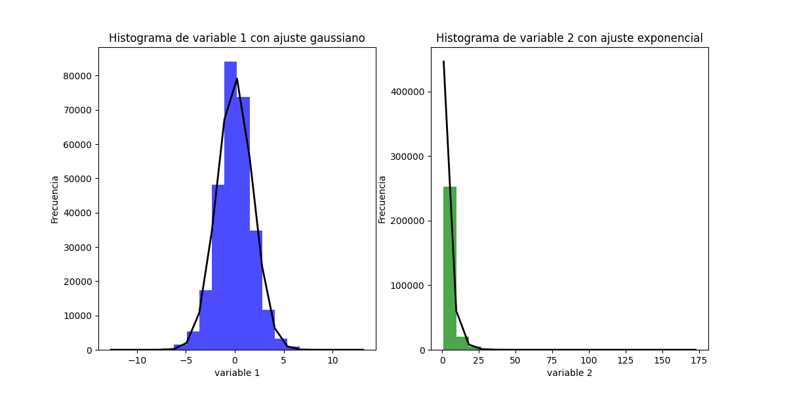

Resultados obtenidos en el avance
En esta primera parte de los resultados, se va observar el comportamiento de los datos de las variable_1 y variable_2 en histogramas.

Ahora utlizando la misma imagen pero aplicandoles los modelos de probabilidad. En donde se puede apreciar como como la variable_1 tiene un comportamiento normal o más conocido como campana de Gauss, por otra parte la variable_2 posee un comportamiento exponecial.

Finalmente, se aprecia los momentos de los modelos:
Momentos de variable_1:
- Promedio: 0.0030754730077360497
- Varianza: 3.2927034329900775
- Desviación estándar: 1.8145807871213884
- Inclinación: 0.010291901241070064
- Kurtosis: 1.1335262206667638
Momentos de variable_2:
- Promedio: 4.292701198685403
- Varianza: 33.974125486393426
- Desviación estándar: 5.828732751327121
- Inclinación: 4.89787631161442
- Kurtosis: 44.381358162707954